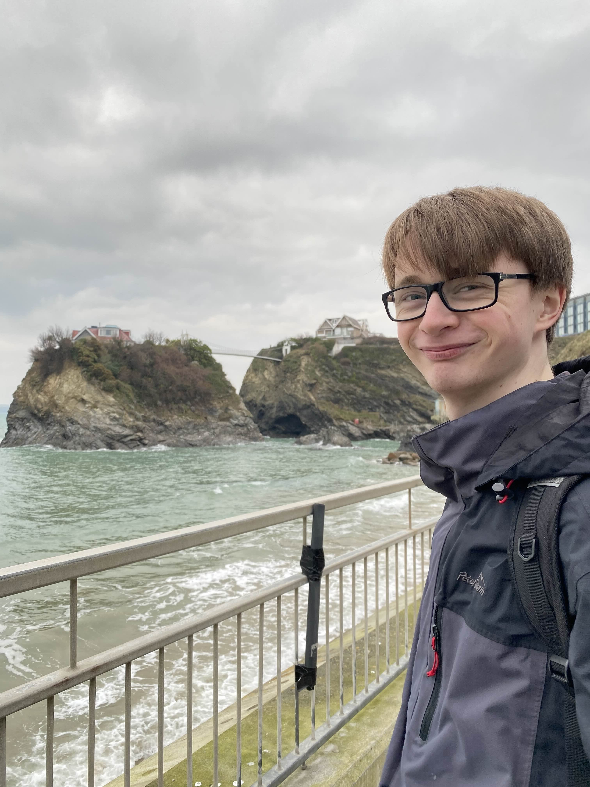

About me
Hi, I'm Will!
I'm a Junior QA Engineer at 3 Sided Cube in Bournemouth. I test mobile apps and websites, log bugs through to resolution, and work on our automated test suites, where I've cut test run times by 40%.
I graduated from Falmouth University in 2025 with a BSc (Hons) in Computing for Games (2:1). I enjoy every part of game development, but programming most of all, especially graphics, gameplay, AI and UI systems. My dissertation looked at how culling algorithms improve rendering performance in C++ and OpenGL.
Experience & education
-
May 2026 – present
Junior QA Engineer, 3 Sided Cube
Bournemouth. Testing mobile apps and websites, and maintaining and optimising automated test suites.
-
Nov 2024 – Feb 2025
Gameplay Programmer Intern, SpySquad HQ
Falmouth. Programmed and polished inventory, dialogue and item interaction systems in Godot and GDScript for a point-and-click puzzle game for players aged 9+.
-
2022 – 2025
BSc (Hons) Computing for Games, Falmouth University
Upper Second Class (2:1). Modules included Principles of Computing (83%) and Advanced Games Programming (79%).
Skills
Testing & QA
- Automated test suites
- Test case design and test runs
- Bug logging and verification
- Unit testing
Languages
- C#, C++, Python
- GDScript, Unreal Blueprint
- JavaScript, R, LaTeX
Engines & tools
- Unity, Unreal Engine 5, Godot
- OpenGL
- Git and version control
Ways of working
- Agile and Scrum
- Multidisciplinary teams
Outside work
I've practised karate for 11 years and Tang Soo Do for 3. I also enjoy hiking and running, and, unsurprisingly, computers, tech and games.